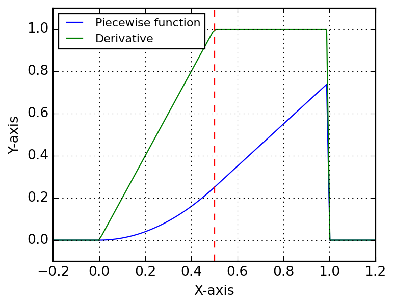
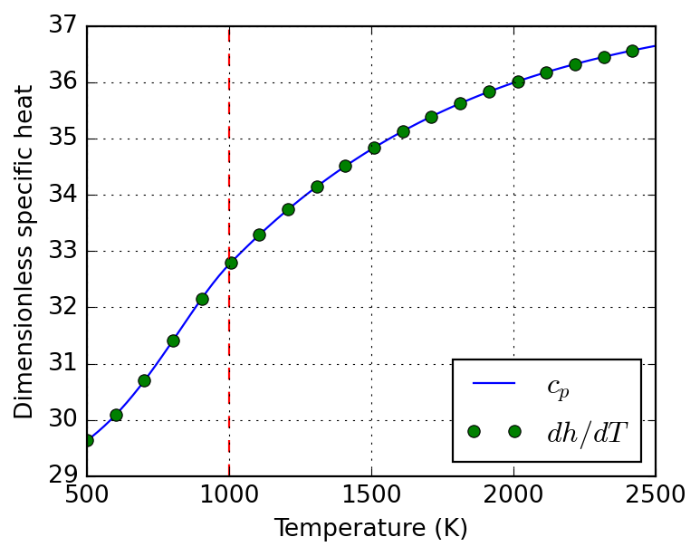

This module contains utilities for working with symbolic functions, especially in the context of engineering problems treated by Majordome models. It is mostly a wrapper around CasADi, organizing symbolic operations and providing additional functionality for function manipulation in a physical context.
4.1 PiecewiseFunction
A major issue when working with symbolic expressions and real-world data is that they do not support flow-control constructs like if statements. This is a problem when we want to represent functions that are defined piecewise, especially when algorithmic differentiation is involved.
As an example, take the parameterization of thermodynamic properties of chemical species. For quantitative purposes, to ensure high accuracy, researchers have found that it is best to use different polynomial fits for different temperature ranges. This means that the thermodynamic properties of a species are defined as piecewise functions of temperature, which is a problem when we want to use them in a symbolic context.
To tackle this issue in certain contexts, PiecewiseSymbolicFunction provides an interpolation between different ranges of the domain of a function. Internally it makes use of Heaviside functions to ensure that the function is continuous. This is not a perfect solution, as it does not guarantee differentiability at the breakpoints, but it is a good compromise between accuracy and simplicity. It is also worth noting that this class is not meant to be used in a general context, but rather in specific contexts where the function is known to be well-behaved.
Compose a symbolic piecewise function with CasADi.
Parameters
breakpoints : list[float]
List of breakpoints where the function changes.
functions : list[typing.Any]
List of functions to apply between breakpoints. The number of functions must be one less than the number of breakpoints.
Let’s illustrate its use with a simple example. We define two functions f and g, and we want to create a piecewise function that is equal to f for x < 0.5 and equal to g for x >= 0.5. Functions have being created such that they evaluate to the same value at the breakpoint, as the practical case that led to the class development, i.e. NASA-parameterization of thermochemical properties. Below we show how to create the piecewise function, evaluate it numerically and symbolically, and compute its derivative symbolically.
# Define two simple functions:f =lambda x: x**2g =lambda x: f(0.5) + (x -0.5)# Create the piecewise function:F = PiecewiseSymbolicFunction([0, 0.5, 1], [f, g])# Evaluate numerically:x = np.linspace(-0.2, 1.2, 100)y = F(x)# Evaluate symbolically:T = SX.sym("T")Y = F(T)# Create a function for evaluating the derivative:ydot = Function("fdot", [T], [jacobian(Y, T)])
Below we plot the piecewise function and its derivative. The function is continuous, but the derivative is not, as expected, although the transition is handled smoothly by the Heaviside functions. The red dashed line indicates the breakpoint at x = 0.5, where the function transitions from f to g.

4.2 Species thermodynamics
Notesymbolic_thermo_factory
symbolic_thermo_factory( species : Species, T : SX ) -> AbstractSymbolicThermo:
Create an AbstractSymbolicThermo object.
Parameters
species : Species
Cantera species object, with NASA7 thermodynamic data.
T : SX
Temperature variable (symbolic).
Suppose you need to create a symbolic representation of the NASA7 thermodynamic parameterization of molecular nitrogen, species of index 47 in the GRI-Mech 3.0 mechanism shipped with Cantera. Let’s start by loading and retrieving the thermodynamic data for this species.
gas = ct.Solution("gri30.yaml")species = gas.species()[47]thermo = species.thermo
Below we instantiate SymbolicThermo with the input data of the species. It is important to emphasize here that when building more complex systems, generally one should share the symbolic variables, e.g. temperature, across the different components of the system. For this reason, the constructor of symbolic thermodynamic classes expect the temperature symbol to be provided, instead of trying to create it internally; this is a design choice that will improve code robustness when handling mixtures and avoid many of the pitfalls of symbolic programming.
T = SX.sym("T")nasa7 = symbolic_thermo_factory(species, T)
NotePractical usage
You could instead directly instantiate Nasa7Thermo with the input data, but using the factory method SymbolicThermo.from_species is a better choice, as it will allow you to easily switch to a different thermodynamic model. Furthermore, it is the safe choice for loading entire databases.
nasa7 = Nasa7Thermo(T, species.thermo.input_data)# This is just syntactic sugar for the above:nasa7 = Nasa7Thermo.from_species(species, T)
Here we illustrate the use of algorithmic differentiation to compute the derivative of the specific enthalpy with respect to temperature.
The above derivative is then confronted to the specific heat below:

Finally, we compare the deviations between symbolic and numerical (Cantera) evaluation of the thermodynamic functions. This is not for error analysis, but a proof of correctness of the symbolic implementation.
# XXX: Cantera evaluates quantities per kmol! Divide by 1000 to get# per mol, as the symbolic implementation does.c_ct = np.array([0.001* species.thermo.cp(T) for T in T_num])h_ct = np.array([0.001* species.thermo.h(T) for T in T_num])s_ct = np.array([0.001* species.thermo.s(T) for T in T_num])error_c = np.mean(np.abs(nasa7._cp(T_num) - c_ct))error_h = np.mean(np.abs(nasa7._h(T_num) - h_ct))error_s = np.mean(np.abs(nasa7._s(T_num) - s_ct))error_c, error_h, error_s
Nasa7Thermo( T : SX, input_data : dict[str, typing.Any] ) ->None:
NASA7 thermodynamic parameterization.
This class does not implement Horner polynomial evaluation, as the main use case is to create symbolic expressions that are then evaluated by CasADi, which can handle polynomial evaluation efficiently. This is intentional and allows for easy verification. It aims at providing a similar interface as SpeciesThermo from Cantera, from which it retrieves the data. That means, molar properties are provided through cp, h, and s properties.
Parameters
T : SX
Temperature variable (symbolic).
input_data : dict[str, typing.Any]
NASA7 thermodynamic data, as provided by Cantera’s SpeciesThermo property input_data.
Notespecific_heat
specific_heat( T : Any, a : list[float], symbolic : bool=False ) -> casadi.casadi.Function | casadi.casadi.SX:
Compose NASA7 specific heat parameterization.
Parameters
T : Any
Temperature variable (symbolic or numeric).
a : list[float]
List of 7 NASA7 coefficients.
symbolic : bool=False
Whether to return a symbolic expression.
Noteenthalpy
enthalpy( T : Any, a : list[float], symbolic : bool=False ) -> casadi.casadi.Function | casadi.casadi.SX:
Compose NASA7 specific enthalpy parameterization.
Parameters
T : Any
Temperature variable (symbolic or numeric).
a : list[float]
List of 7 NASA7 coefficients.
symbolic : bool=False
Whether to return a symbolic expression.
Noteentropy
entropy( T : Any, a : list[float], symbolic : bool=False ) -> casadi.casadi.Function | casadi.casadi.SX:
Compose NASA7 specific entropy parameterization.
Parameters
T : Any
Temperature variable (symbolic or numeric).
a : list[float]
List of 7 NASA7 coefficients.
symbolic : bool=False
Whether to return a symbolic expression.
Notecompose
compose( cls : Any, name : str, T : casadi.casadi.SX | numpy.ndarray[tuple[typing.Any, ...], numpy.dtype[numpy.float64]] |float, data : list[list[float]], symbolic : bool=False ) ->list[casadi.casadi.Function | casadi.casadi.SX | numpy.ndarray[tuple[typing.Any, ...], numpy.dtype[numpy.float64]] |float]:
Compose a list of NASA7 functions for given data.
Parameters
name : str
Name of the function (“specific_heat”, “enthalpy”, or “entropy”, i.e the static methods of this class).
T : casadi.casadi.SX | numpy.ndarray[tuple[typing.Any, ...], numpy.dtype[numpy.float64]] |float
Temperature variable (symbolic).
data : list[list[float]]
List of NASA7 coefficient sets for each temperature range.
symbolic : bool=False
Whether to return symbolic expressions or CasADi functions. Only relevant if T is symbolic.
Notefrom_species
from_species( cls : Any, species : Species, T : SX ) -> typing.Self:
Create a Nasa7Thermo object from a Cantera species.
Parameters
species : Species
Cantera species object, with NASA7 thermodynamic data.
T : SX
Temperature variable (symbolic).
4.3 Species transport
Notesymbolic_transport_factory
symbolic_transport_factory( species : Species, T : SX ) -> AbstractSymbolicTransport: